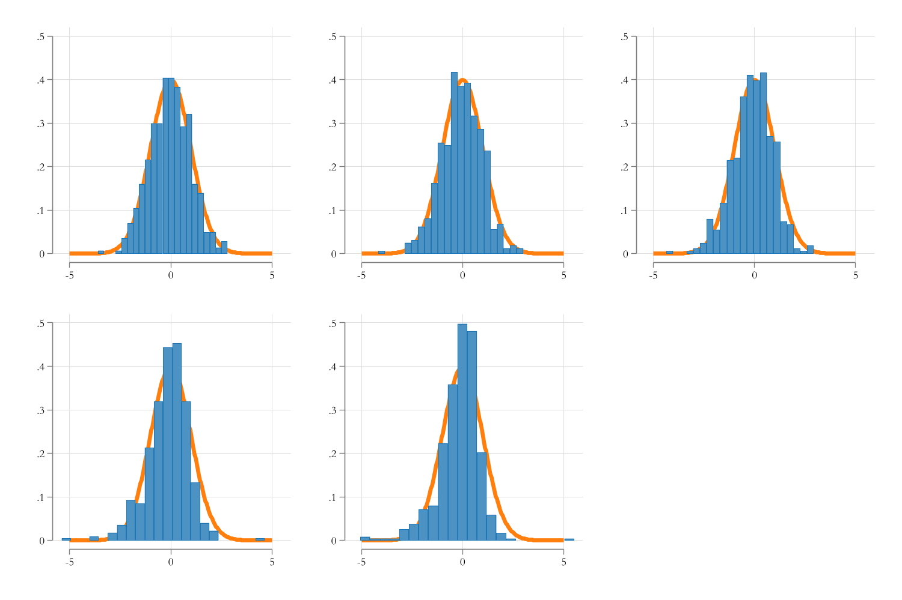

flowchart LR
e( error ) --> Y(Outcome)
subgraph Treatment
D1(Exog)
D2(Endog)
end
D1( Exog ) --> Y(Outcome)
D2( Endog ) --> Y(Outcome)
Z(Instrument) --> D1
v(unobserved) -.-> D2
v(unobserved) -.-> Y(Outcome)
Instrumental Variables
Many are called, only few answer
Recap: PO’s and RCT’s
Quick Recap. The goal of the methodologies we are covering is to identify treatment effects.
In the PO framework, that is done by simply comparing a group with itself, in two different States (treated vs untreated)
Since this is impossible, the next best solution is using RCT. Individuals are randomized, and assuming every body follows directions, we can identify treatment effects of the experiments.
But only if the RCT is well executed! Sometimes even that may fail
Instrumental Variables
While here discussed 3rd, the second best approach to identify Treatment effects is by using Instrumental variables.
In fact with a Good-Enough instrument, one should be able to identify ANY causal effect. Assuming such IV exists.
but how?
If the instrument is good, it may create an exogenous variation, which will allow us to identify Treatment effects by looking ONLY at those affected by the treatment!
Using the external variation, we can Estimate TE comparing two groups who are identical in every aspect, except being expose to the Instrument, because they were exposed to the instrument. The randomization comes Because of the IV!
Cannonical IV
As we have mentioned, the estimation of TE require that we identify two groups of individuals with mostly similar (if not identical) characteristics. This include unobserved characteristics.
If the latter is not true, we have a problem of confunders or Endogeneity. But why?
Consider the following diagram
Here the effect of \(D\) on \(Y\) is direct, because there is nothing else that would get people confuse why treatment affects outcome
flowchart LR e(error) --> Y(Outcome) D(Treatment) --> Y(Outcome)
Here the effect of \(D\) on \(Y\) is not as clear, because there is an additional factor \(v\) that affects \(D\) and \(Y\) (is in the way)
flowchart LR e( error ) --> Y(Outcome) D( Treatment ) --> Y(Outcome) v(unobserved) -.-> D(Treatment) v(unobserved) -.-> Y(Outcome)
Cannonical IV
Here is where a good instrument comes into play.
- Not everything in \(D\) is affected by \(v\). Some may, but some may be trully exogenous. What if we have an instrument that helps you ID this:
- By Isolating those affected by the Instrument Alone, we do not need to worry about endogeneity anymore.
Properties
Instrumental variables should have at the very list 2 Properties
- The instrumental variable \(Z\) should not be correlated with the model error (Validity).
- But, it should explain the treatment Itself \(D\) (Relevance).
Failure of (1) may reintroduce problems of endogeneity. Faiture of (2) will make the instrument Irrelevant.
How does it work
Consider the following.
- People who study more, tend to earn higher wages
- People with high ability tend to study more.
- People with high ability, also earn higher wages.
Does Studying more generate higher wages?
Instrument. We create a lottery that provides some people resources to pay for their education. This gives them a chance to study more (regardless of ability). \[Z \rightarrow D\]
So, we know the instrument was Random. We can analyze how much outcome increases among those benefited by the Lottery.
\[E(W|Z=1)-E(W|Z=0)\]
This is often called the reduced form effect.
In principle, \(Z\) only affects wages because of education. So looking at this differences should be similar to a treatment effect of Lotteries.
These are also known as Intention to treatment effect. Which will bias towards zero, because not everyone will effectively make use of the opporunities
In othe words, not everyone will Study more…So we can see if the lotery had that effect.
\[E(S|Z=1)-E(S|Z=0)\]
This is the equivalent to the first stage. Where we measure the impact of the “instrument/lottery” on Education (to see, say, relevance)
Finally, the TE is given by the Ratio of thes two
\[TE=\frac{E(W|Z=1)-E(W|Z=0)}{E(S|Z=1)-E(S|Z=0)} \]
This is also known as the Wald Estimator. How much of the changes in wages is due to changes in the “# treated”
Some commnents
- This was an example of a binary instrument, which was assigned at random.
- In fact, this particular scenario is typical byproduct of “failed” RCTs!
- Partially failed RCTs: Not every body selected WAS treated
Consider the following:
- We make the RCT above giving bouchers to People so they Study more.
- But, not everybody uses the bouchers:
- Some use them and study more.
- Some decide to not use them.
Comparing Wages among those who receive will only provide you the “intention to treat” effect. (Reduced form)
Because of imperfect compliance we need to “readjust/inflate” our TE estimate.
More Comments
In this scenario the Reduced form and second stage can be estimated by just comparing means, because the treatment was randonmized.
- In other words, something you really want is an instrument that is as good as random.
The effect we capture is a LOCAL treatment effect (LATE).
However, it could be an ATE if:
- The effect is homogenous for everyone.
- The people affected by the treatment is a representative of the population
It all boils down to identifying who is or might be affected by the treatment.
For now, lets assume effects are Homogenous (So we get ATEs)
Who Are Affected and who are not?
Even if we are able to identify ATEs, its important to understand who can be affected by the instrument, because the population is generally selected in 3 groups
- never takers & always takers: These are the individuals who would have never done anything different than their normal.
- Perhaps their likelihood was already too low (or high) to be affected.
- Compliers: These are the ones who, given they receive “instrument”, they comply and follow up. We use their variation for analysis.
- Defiers: These are the ones who, given Z, will do the oposite. We cannot differentiate them from Compliers, so they will affect how treatment is estimated.
We do not want to have defiers!
Extension 1: Continuous Instrument
The Wald estimator is for the simplest case of binary treatment. However, if the treatment is continuous, one could modify the IV estimator as follows:
\[ \delta_{IV} = \frac{cov(y,z)}{cov(d,z)} \]
The logic remains. We are trying to see how variation in the outcome related to Z reates to changes in treatment because of Z.
The treatment here is very small (Small changes in d). The intuition is that we are averaging the variation in the outcome across all Zs to estimate the effect.
Extension 2: Controls
Adding controls to the model is also straight forward, and you have quite a few options for it
- Adding exogenous controls may help improving model precision, even if instrument was randomized. The easiest way to do this is by applying the 2sls procedure (among others)
\[ \begin{aligned} 1st: d = z\gamma_z + x\gamma_x + e_1 \\ 2nd: y = x\beta_x + \delta \hat d+ e_2 \end{aligned} \]
The 1st stage “randomizes” instrument to measure the effect on treatment.
The 2nd stage uses predicted values of the first to see what the impact on the outcome will be.
This works because \(\hat d\) is exogenous, “carrying over” exogenous changes in the treatment.
Extension 2: Controls
One can also think of the approach as a pseudo Wald Estimator, with continuous variables:
\[ \begin{aligned} 1st: d &= \gamma_z * z + x\gamma_x + e_1 \\ rd: y &= \beta_z * z+ x\beta_x + e_2 \\ ATE &=\frac{\beta_z}{\gamma_z}=\frac{cov(y,\tilde z)}{cov(d,\tilde z)} \end{aligned} \]
This compares average changes in the outcome to average changes in the treatment.
Extension 3: Multiple Endogenous Variables
Although less common in Causal Analysis perspective, in other frameworks one may to consider more than 1 instrument or using instrument interactions. In these cases one still has two alternatives
- 2SLS: One can model more than one endogenous variable at the same time, simply substituting the predicted values in the main regression. When using interactions, or polynomials, each will need its own first stage regression.
- Control function approach. In contrast with the “prediction subtstitution” approach, this method suggests using a “residual inclusion approach”. This controls for endogeneity directly. If there is only one endogenous variable (with interactions of polynomials) only one model is needed.
In the first case, you need at least 1 instrument per regression. Even if its just a transformation of the original variable
In the second case, you need at least 1 instrument per endogenous variable.
Instrument Validity
As mentioned earlier, Instruments require to fullfill two conditions:
- Relevant. They need to be Strongly related to the endogenous variable
- Exogenous. instruments should not and cannot be endogenous. In fact, you want instruments that are as good as random, thus not defined by the “system” in anyway.
IV Validity: Exogeneity
Unfortunately, for most cases, this assumption is not testable, because we do not observe the model unobservables, thus dont know if \(z\) is related to those unobserved components.
While most efforts for these are done through model design, or argumentation, there are at least 2 options to verify the exogeneity
If truly exogenous, the instrument should be as good as random. Thus controls shouldnt be affected by the instrument. (Balance test)
Otherwise, one could test for exogeneity only by comparing Estimates across different IV’s. Different results may suggest instruments are invalid.
- Run a regression of Residuals from the main model against all exogenous variables plus other instruments.
Note: Unless the instrument was randomized, assumed is going to be slighly endogenous.
IV Validity: Strength
The only thing we could probably do is try to analyze model strength. How much does the instrument affect treatment take up? is the effect marginal? or a large effect?
Weaker instruments may create larger problems on the analysis because:
- With weaker instruments, the precision of the estimator drops substantially.
- With weaker instruments, any “endogeneity” problem (even due to randomness) will generate a bias
- Stock and Yogo (2005) suggest and F~13.9 (or higher) for a 5% bias
- Lee, et al (2020) suggest you need even higher F’s if you want to avoid problems with CI
- With weak instruments, distribution of beta coefficients will no longer be normal!
IV Strength
Code
capture program drop simx
program simx, eclass
clear
set obs 500
gen z=rnormal()>0
gen u1=rnormal()
gen u2=rnormal()
gen u3=rnormal()
forvalues i = 1/5 {
gen d`i' = ((-0.5+z) + (u1 + u2)*0.5*`i')>0
gen y`i' = 1 + d`i'+u3+u2
}
forvalues i = 1/5 {
reg d`i' z
matrix b`i' =(_b[z]/_se[z])^2
ivregress 2sls y`i' (d`i'=z)
matrix b`i' = b`i',_b[d`i'],_se[d`i'],_b[d`i']/_se[d`i']
matrix colname b`i'=f_stat beta beta_se beta_t
matrix coleq b`i'=md`i'
}
matrix b=b1
forvalues i = 2/5 {
matrix b=b,b`i'
}
ereturn post b
end
Variable | Obs Mean Std. dev. Min Max
-------------+---------------------------------------------------------
md1_b_f_stat | 494 189.9262 38.63693 101.8865 337.4117
md1_b_beta | 494 .9912474 .2289997 .1758122 1.64053
md1_b_beta~e | 494 .2440663 .0235266 .1867024 .3293121
-------------+---------------------------------------------------------
md2_b_f_stat | 494 43.33591 13.76347 12.07967 101.6624
md2_b_beta | 494 .9717824 .4421832 -.8390987 2.327243
md2_b_beta~e | 494 .4711093 .0945389 .3032212 .9873207
-------------+---------------------------------------------------------
md3_b_f_stat | 494 19.25043 8.81203 2.051613 61.55846
md3_b_beta | 494 .9354647 .6820819 -1.964163 2.996998
md3_b_beta~e | 494 .7430147 .2493365 .383426 2.16554
-------------+---------------------------------------------------------
md4_b_f_stat | 494 11.19082 6.428525 .0483399 38.44057
md4_b_beta | 494 .8711808 .9987467 -4.383311 5.634943
md4_b_beta~e | 494 1.135114 1.244907 .4609722 25.16503
-------------+---------------------------------------------------------
md5_b_f_stat | 494 7.522731 5.144063 .0544148 28.23535
md5_b_beta | 494 .7696057 1.443986 -6.293723 8.951643
md5_b_beta~e | 494 1.69479 1.866909 .530196 18.3837IV Strength: Bias distribution
use resources/simiv.dta, clear
forvalues i = 1/5 {
qui:sum md`i'_b_beta
gen new`i'=(md`i'_b_beta-1)/r(sd)
}
set scheme white2
color_style tableau
two function y=normalden(x), range(-5 5) lwidth(1) pstyle(p2) || histogram new1, name(m1, replace) , legend(off)
two function y=normalden(x), range(-5 5) lwidth(1) pstyle(p2) || histogram new2, name(m2, replace) , legend(off)
two function y=normalden(x), range(-5 5) lwidth(1) pstyle(p2) || histogram new3, name(m3, replace) , legend(off)
two function y=normalden(x), range(-5 5) lwidth(1) pstyle(p2) || histogram new4, name(m4, replace) , legend(off)
two function y=normalden(x), range(-5 5) lwidth(1) pstyle(p2) || histogram new5, name(m5, replace) , legend(off)
graph combine m1 m2 m3 m4 m5, col(3) xcommon ycommon
graph export resources/cmb.png, width(1500) replace
IV Strength Solution: weakiv
Weak IV’s are a problem in the sense that it may induce bias on the estimated coefficients, but also that it may affect how Standard Errors are estimated.
- The distribution of the Statistic is no longer normal
One solution, in this case, is at least adjusting SE and CI So they better reflect the problem.
In Stata, this can be done with
weakiv(ssc install weakiv)At the end, however, if you weak instruments, you may be able to correct of potential biases, but you may need to get more data, or better instruments
LATE: Local Average Treatement Effect
Up to this point, we imposed the assumption that TE were homogenous. Thus, IV could identify Treatment effects for everyone. (Average Treatment effect)
However, not everyone may be affected by the instrument, only by the compliers.
Two ways of thinking about it:
- Not everybody is affected by the instrument. (you have the always and never takers)
- the instrument was never suppoused to affect certain groups!
So, IV will identify TE for the compliers only.
Because of this, using different instruments may actually identify different effects, based on which population was affected.
Overid tests may fail in this case.
Simulation Example:
clear
set obs 10000
gen sex = rnormal()>0
gen z1 = rnormal()>0
gen z2 = rnormal()>0
gen e_1 =rnormal()
gen e_2 =rnormal()
gen e_3 =rnormal()
gen D =(z1*(sex==0) + z2*(sex==1) + (e_1 + e_2)*.5)>0
gen Ds =( (e_1 + e_2)*.5)>0
gen y = 1 + D*(sex==0) +2*D*(sex==1)+e_3+e_2Number of observations (_N) was 0, now 10,000.%%echo
ivregress 2sls y (D=z1)
ivregress 2sls y (D=z2)
ivregress 2sls y (D=z1 z2)
. ivregress 2sls y (D=z1)
Instrumental variables 2SLS regression Number of obs = 10,000
Wald chi2(1) = 68.61
Prob > chi2 = 0.0000
R-squared = 0.2706
Root MSE = 1.5526
------------------------------------------------------------------------------
y | Coefficient Std. err. z P>|z| [95% conf. interval]
-------------+----------------------------------------------------------------
D | 1.170842 .1413543 8.28 0.000 .8937923 1.447891
_cons | 1.233464 .1015275 12.15 0.000 1.034474 1.432455
------------------------------------------------------------------------------
Endogenous: D
Exogenous: z1
. ivregress 2sls y (D=z2)
Instrumental variables 2SLS regression Number of obs = 10,000
Wald chi2(1) = 211.38
Prob > chi2 = 0.0000
R-squared = 0.3558
Root MSE = 1.4591
------------------------------------------------------------------------------
y | Coefficient Std. err. z P>|z| [95% conf. interval]
-------------+----------------------------------------------------------------
D | 1.948051 .1339876 14.54 0.000 1.68544 2.210662
_cons | .6818014 .0962172 7.09 0.000 .4932192 .8703836
------------------------------------------------------------------------------
Endogenous: D
Exogenous: z2
. ivregress 2sls y (D=z1 z2)
Instrumental variables 2SLS regression Number of obs = 10,000
Wald chi2(1) = 257.90
Prob > chi2 = 0.0000
R-squared = 0.3223
Root MSE = 1.4966
------------------------------------------------------------------------------
y | Coefficient Std. err. z P>|z| [95% conf. interval]
-------------+----------------------------------------------------------------
D | 1.556085 .0968958 16.06 0.000 1.366172 1.745997
_cons | .9600188 .0703862 13.64 0.000 .8220643 1.097973
------------------------------------------------------------------------------
Endogenous: D
Exogenous: z1 z2
. Popular IV Designs
Canonical Designs
The general message about using IV’s is, and has always been, that they are hard to come by.
Applied research spends a quite good amount of time explaining why a particular instrument IS valid. (exogenous and relevant)
Relevance is generally easy to test, but exogeneity is difficult. Little can be done other than relying in other papers, and circumstances.
There are also those “clever” IVs, that tend to be case specific
- Scott Cunningham talks about Instruments being “weird”, because you wouldnt expect them to be in the context of the research
There are, however, some designs that are used quite often, because they apply to different circumstances.
CD: Lotteries
In RCT, Lotteries are commonly used to decide who gets or doesnt get treatment among participants. Once treatment is assigned, however, not everyone will effectively taking up the treatment.
- Furthermore, some people may still end up being effectively treated because of other factors.
This is a case of imperfect compliance.
In cases like this, the lottery itself (which is randomized) can be used as instrument to identify the effect of being effectively treated.
Examples:
- Vietnam Draft Lottery
- Oregon Medicaid Expansion Lottery
CD: Judge Fixed Effects
This design is also partially based on a kind of randomized assigment.
- Individuals are “allocated” to work, or be judge, under different officers “judges”, at random.
- Judges are consistent among each other, with only difference being the severity of the judgment.
- Then Judge fixed effect can be used as an instrument on the judgment (treatment), and the final impact on the outcome of interest.
The idea here is that “judgment-severity” varies by judge. This difference in taste creates exogenous variation on some treatment, which is analyzed on some treatment.
Example:
- Teachers Grading? Driving test officers? Performance tests?